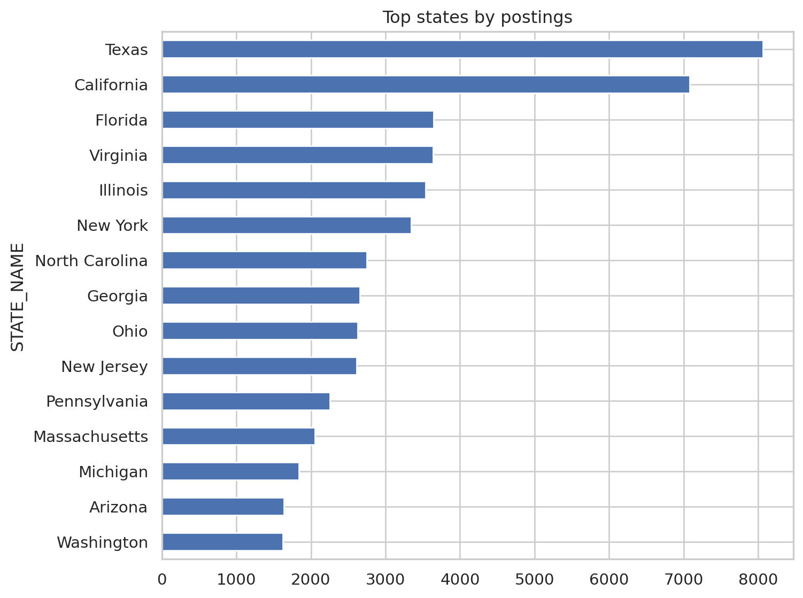

from pyspark.sql import SparkSession, functions as Fimport seaborn as sns, matplotlib.pyplot as pltsns.set(style="whitegrid")spark = SparkSession.builder.appName("EDA").getOrCreate()df = spark.read.parquet("data/clean_job_postings.parquet")
Overview Geographic EDA using Lightcast cleaned Spark DataFrame df. Focus on states, remote share, salaries, and hubs.
Top 10 States by Job postings
Code
state_counts = (df.groupBy("STATE_NAME") .agg(F.count("*").alias("postings")) .orderBy(F.col("postings").desc()) .limit(10))pdf = state_counts.toPandas()plt.figure(figsize=(8,4))sns.barplot(data=pdf, x="postings", y="STATE_NAME", color="#4C78A8")plt.title("Top 10 States by Job Postings")plt.xlabel("Postings")plt.ylabel("State")plt.tight_layout()plt.show()
top_states = df.groupBy("STATE_NAME").count().orderBy("count", ascending=False).limit(15).toPandas()top_states.plot(kind="barh", x="STATE_NAME", y="count", figsize=(8,6), legend=False, title="Top states by postings")import matplotlib.pyplot as pltplt.gca().invert_yaxis()plt.tight_layout()plt.show()

Top states by remote share
Code
state_remote_pdf = df.groupBy("STATE_NAME","REMOTE_TYPE").count().toPandas()pivot = state_remote_pdf.pivot_table(index="STATE_NAME", columns="REMOTE_TYPE", values="count", aggfunc="sum", fill_value=0)pivot["total"] = pivot.sum(axis=1)for c in ["Remote","Hybrid","Onsite"]:if c notin pivot.columns: pivot[c] =0pivot["remote_share"] = pivot["Remote"] / pivot["total"]top_remote = pivot.sort_values("remote_share", ascending=False).head(15)top_remote["remote_share"].plot(kind="barh", figsize=(8,6), xlim=(0,1), title="Top states by remote share")plt.gca().invert_yaxis()plt.tight_layout()